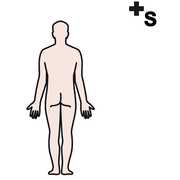

I fondamenti, modulo 1
Perché la matematica parte dal corpo
Numeri, figure e relazioni non si vedono: si costruiscono nella mente. Per costruirli il bambino ha bisogno di agire, non di ascoltare spiegazioni.
la domanda
di partenza
Oggetti che non si vedono
 numeri
numeri pensare
pensare
corpoUn numero non si può osservare: nessun microscopio mostra il «tre». Lo stesso vale per una retta, un insieme, un ordine. Gli oggetti della matematica esistono solo come costruzioni mentali.
Per questo Beppe Pea colloca la matematica, insieme a motoria e tecnologia, nell'ambito dell'azione: si impara facendo, perché è l'azione che permette di concepire ciò che non si può vedere.
Recitare o capire
 parlare
parlare capire
capire problema
problemaMatematica recitata
Il bambino ripete formule, procedure e filastrocche numeriche senza averne costruito il senso. Il risultato: risposte corrette in apparenza, ma fragili.
Matematica capita
Il bambino arriva al concetto attraverso un problema vissuto, lo racconta con parole sue, poi lo disegna e infine lo scrive con i simboli.
Una matematica solo recitata porta spesso a incomprensione, bassa autostima e rifiuto dei problemi, e impedisce di cogliere la bellezza generativa della disciplina.
quattro
attenzioni
Che cosa cambia in classe
 insegnante
insegnante giocare
giocare classe
classe- Rispettare l'età mentaleProporre ciò che il bambino può davvero costruire, evitando stereotipie verbali.
- Insegnare, non «fare» la disciplinaServe conoscere come si forma un concetto, non solo il concetto.
- Partire dalla realtà quotidianaIl legame con la vita di ogni giorno è la vera motivazione.
- Dare spazio all'azioneOgni concetto nuovo passa prima dal corpo.